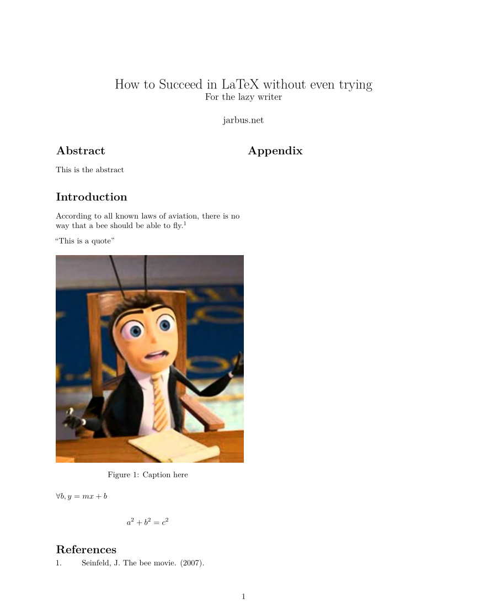

I love the look of LaTeX but hate the experience of writing in LaTeX. Luckily, Pandoc can convert Markdown files to PDFs using a LaTeX engine as the renderer. Pandoc has a custom Markdown specification that can fill almost all my LaTeX needs.
First, let’s talk about where Pandoc Markdown falls short:
- No custom LaTeX style guides (although citation style files are supported)
- No Section Numbering
- Referencing labels doesn’t work well (Supposedly the pandoc-crossref filter fixes this but I couldn’t get it to work)
- Don’t even bother with complex page layouts or precise figure placements
This might be a deal breaker for some, but for others who are writing lots of documents (such as students), this may not be a big deal. Now for the benefits:
- Produce a document with Markdown that looks like it was written in LaTeX
- Use LaTeX math notation in Markdown
- Easy BibTeX citations in Markdown
- Figures and Captions are supported
- Two Columns are supported
- Use your favorite editor instead of some LaTeX IDE
- Write and preview offline
- Build a document in one command
If you are reading this, you probably know how both Markdown and Latex work, and you probably know how to read the Pandoc Markdown Documentation, so instead, below is a template document that I wish I had when first starting out. It covers most things you’d need to write simple papers in Markdown. Configuration for document settings is done in the YAML block at the top of the document.
---
title: How to Succeed in LaTeX without even trying
subtitle: For the lazy writer
author:
- jarbus.net
geometry:
- margin=1in
linkcolor: black
urlcolor: blue
bibliography: example.bib
csl: nature.csl
header-includes: |
\usepackage{package_here}
classoption:
- twocolumn
abstract: |
This is the abstract
---
# Introduction
According to all known laws
of aviation, there is now way
that a bee should be able to fly. [@seinfeld2007]
| "This is a quote"
{width=50% }
$\forall b , y = mx+b$
$$
a^2 + b^2 = c^2
$$
# References
::: {#refs}
:::
# Appendix
Then, to compile your document to a PDF, simply run:
pandoc "file.md" -o "file.pdf" --citeproc
to generate a document that looks like this:

The --citeproc option is needed for compiling a bibliography. For cross-references inside a document, take a look at pandoc-crossref, which will require the use of --filter pandoc-crossref if it works for you.
I mapped a modified version of the build command above to a key in Neovim, so now pressing Space+b in my Markdown buffer compiles my document automatically, no matter what file name I’m using:
autocmd BufRead,BufNewFile *.md nnoremap <Leader>b
\ :silent !md-pdf "%:p:h" && pandoc % -o "%:p:h/%:t:r.pdf"
\ --filter pandoc-crossref --citeproc &<CR><CR>
And that’s how I write LaTeX documents offline in Markdown.